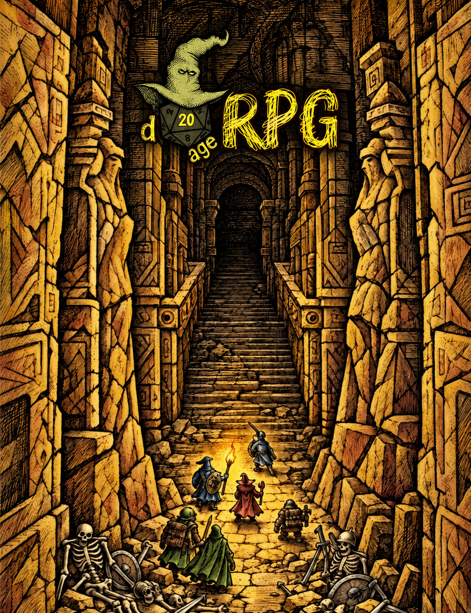

PRÉVIA VISUAL · 0.5.1
Estilo
Preto e branco · padrão
Tinta e hachuras
Exemplo
Combatente
Arcanista
Criatura / NPC
Voltar à ficha
Dados fictícios. Esta prévia usa o HTML e o CSS da ficha; não é uma sessão do Foundry. Campos e abas podem ser experimentados. Rolagens aqui são apenas demonstrações.
Capa e música tema do sistema

D20Age RPG · Ficha de personagem
−
□
×
Exemplos de mensagens no chat
Prévia local. No Foundry, use o controle de compartilhar da janela da imagem.
Fechar imagem